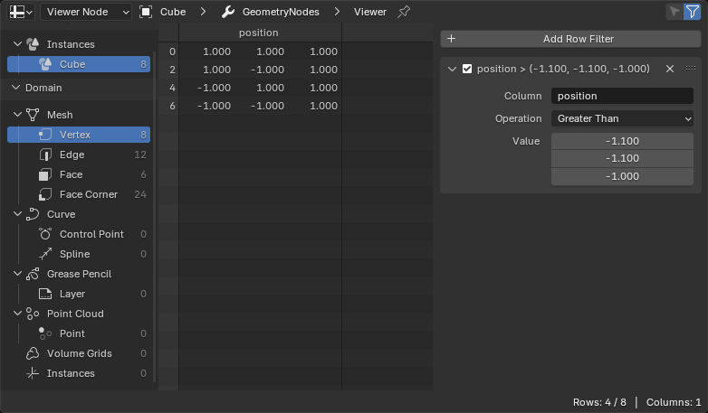

Spreadsheet¶
Spreadsheet editor được dùng để kiểm tra các geometry attribute của object active, thường là nhằm debug geometry nodes.

Spreadsheet editor.¶
Header¶
- Show Only Selected
Tùy chọn này chỉ khả dụng khi object đang ở Edit Mode. Khi được tích, chỉ dữ liệu của các thành phần geometry được chọn mới hiển thị.
- Use Filter
Có sử dụng các bộ lọc được định nghĩa trong Sidebar hay không (xem bên dưới).
Main Region¶
Vùng chính hiển thị dữ liệu attribute dưới dạng bảng tính. Mỗi cột tương ứng với một attribute hoặc thuộc tính dữ liệu, và mỗi dòng đại diện cho một thành phần như vertex, face, spline hoặc instance.
Tên cột và chỉ số dòng vẫn hiển thị khi cuộn theo cả chiều dọc lẫn chiều ngang.
Có thể thay đổi kích thước cột bằng cách nhấp và kéo đường kẻ dọc nằm giữa các cột.
Nhấp đúp vào đường kẻ dọc sẽ tự động chỉnh kích thước cột cho vừa với nội dung.
Có thể sắp xếp lại thứ tự cột bằng cách nhấp và kéo tiêu đề cột.
Ghi chú
Tooltip cung cấp thêm chi tiết về giá trị, tùy vào kiểu. Ví dụ, attribute Byte Color được hiển thị dưới dạng float tuyến tính theo scene, nhưng giá trị integer thực sẽ hiển thị khi di chuột tới các giá trị float, còn giá trị attribute Matrix chỉ hiển thị trong tooltip.
Vùng Data Set¶
Nằm ở bên trái, vùng này kiểm soát dữ liệu nào được hiển thị trong bảng tính.
Context Path¶
Hiển thị tên object đang hoạt động ở header của panel.
Nhấp vào một trong các mũi tên nằm giữa các tên để ẩn modifier.
Nhấp vào biểu tượng sẽ khóa Spreadsheet editor vào object đang hoạt động và đường dẫn dữ liệu hiện tại, giữ cho nó vẫn hiển thị ngay cả khi bạn chọn object khác. Nhấp lần nữa để mở khóa.
- Object Evaluation State
Xác định trạng thái nào của dữ liệu object được hiển thị:
- Evaluated:
Hiển thị dữ liệu với tất cả modifier đã được áp dụng.
- Original:
Hiển thị dữ liệu object gốc, không có modifier.
- Viewer Node:
Hiển thị dữ liệu từ Viewer Node đang hoạt động trong Geometry Nodes.
Bạn cũng có thể chuyển đổi giữa Evaluated và Viewer Node bằng cách nhấp vào biểu tượng / ở header của Viewer node.
Viewer Path¶
Chỉ hiển thị khi Object Evaluation State được đặt thành Viewer Node.
Hiển thị đường dẫn từ modifier đến viewer node đang hoạt động. Nếu viewer node nằm lồng bên trong các group node, mỗi group sẽ xuất hiện trong đường dẫn.
Viewer Data¶
Chỉ hiển thị khi Object Evaluation State được đặt thành Viewer Node.
Chỉ định Phần tử Viewer nào từ Viewer node đang hoạt động sẽ được hiển thị trong Spreadsheet Editor.
Khi một Viewer node xuất nhiều tập dữ liệu (ví dụ, geometry và một hoặc nhiều field đã tính), mỗi tập sẽ xuất hiện như một Viewer Item riêng. Cài đặt này cho phép chọn mục nào để hiển thị, chẳng hạn một attribute cụ thể, value field, hoặc geometry component, mà không cần thay đổi chính kết nối của Viewer node.
Ghi chú
Các viewer item khả dụng phụ thuộc vào Viewer node đang hoạt động và các input được nối vào nó. Việc thay đổi viewer đang hoạt động hoặc chỉnh sửa các kết nối của nó sẽ tự động cập nhật danh sách này.
Geometry¶
Cho phép bạn duyệt các geometry lồng nhau (ví dụ, một mesh nằm trong một instance hoặc một geometry collection).
Domain¶
Cho phép bạn chọn attribute domain để hiển thị, chẳng hạn mesh vertices hoặc curve splines.
Số lượng thành phần trong mỗi domain được hiển thị ngay cạnh mục của nó.
Volume Grids¶
Khi geometry component được chọn là Volume, Spreadsheet hiển thị thông tin chi tiết về mỗi grid chứa trong volume. Mỗi grid đại diện cho một trường dữ liệu duy nhất, như density, color hoặc velocity, và có thể được kiểm tra riêng lẻ để hiểu cấu trúc cũng như mức dùng bộ nhớ của nó.
Thông tin sau được hiển thị cho mỗi grid:
Grid Name -- Tên của dữ liệu grid, chẳng hạn density hoặc temperature.
Data Type -- Kiểu dữ liệu được lưu trong grid, ví dụ Float, Vector hoặc Boolean.
Class -- Lớp của grid, mô tả mục đích hoặc cách dùng, chẳng hạn Fog Volume, Level Set hoặc Unknown.
Voxel Extent -- Bounding box của grid trong tọa độ voxel. Cho biết số voxel theo các hướng X, Y và Z.
Min Voxel -- Tọa độ voxel nhỏ nhất của bounding box của grid. Giá trị này thể hiện các chỉ số voxel X, Y và Z thấp nhất mà grid chiếm, cho biết grid bắt đầu ở đâu trong không gian voxel.
Voxels -- Tổng số voxel đang active trong grid. Bao gồm mọi voxel được lưu tường minh, kể cả khi nằm trong tile (ví dụ, một leaf tile đơn lẻ chứa 512 voxel).
Leaf Voxels -- Số voxel active được lưu trong leaf node. Khác với Voxels, số đếm này không bao gồm các voxel thuộc các tile cấp cao hơn.
Tiles -- Số tile active trong grid. Tile là bộ chứa voxel cấp cao hơn, được các định dạng volume thưa (như OpenVDB) dùng để tối ưu việc lưu trữ.
Size -- Kích thước bộ nhớ ước tính của grid, bao gồm toàn bộ dữ liệu voxel và tile hiện đang được cấp phát.
Các thống kê này cho phép phân tích độ phức tạp, mật độ và chi phí hiệu năng của dữ liệu volumetric được tạo bởi Geometry Nodes hoặc từ các file volume import vào.
Ghi chú
Vì volume grid dùng cấu trúc dữ liệu thưa nên Extent có thể lớn hơn nhiều so với số voxel active thực tế. Chỉ những vùng active của grid mới được lưu trong bộ nhớ, giúp dữ liệu volume vẫn hiệu quả ngay cả với domain lớn.
Thanh trạng thái¶
Thanh trạng thái cho biết có bao nhiêu dòng và cột, và còn lại bao nhiêu dòng sau khi lọc.